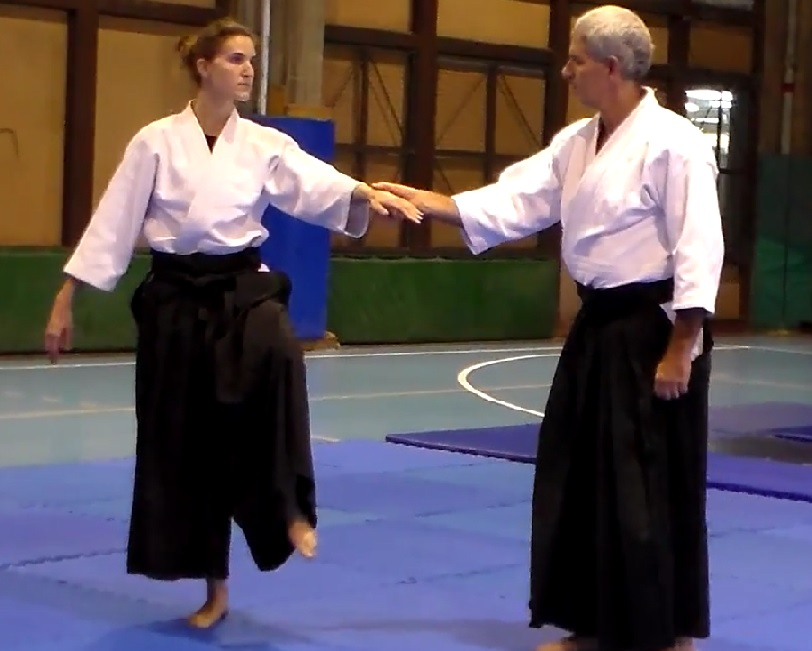

| INICIO | CLASES | PRÁCTICA | SEMINARIO | ARTÍCULOS | BIBLIOGRAFÍA | HISTORIA | LINKS | CONTACTO |
Exámenes de Ki

Son las técnicas a partir de las cuales se aprende a percibir dentro de uno mismo, el espacio exterior y a mantener una relación con el compañero. Todo Test de Ki cuenta con un testeado y un testeador, pero a diferencia de los experimentos de la ciencia, el testeador también está incluido en la experiencia de testear. El testeado se percibe a si mismo y al espacio alrededor de su cuerpo. El testeador hace lo mismo y además arma una relación con el testeado.
A través del Test de Ki se puede obtener una experiencia de equilibrio corporal que va mas allá de la fuerza física o la tensión corporal contraria para no ser desequilibrado por el testeador. Se observa con la experiencia que teniendo una mente amplia, se obtiene un gran nivel de estabilidad, el cual se utiliza luego en la práctica del arte marcial. Al mismo tiempo se aprende a obtener la relación con el compañero sin tirar ni empujar, así como a mantenerse estable en las diferentes posiciones de la técnica. Esa cualidad de contacto que no perturba pero que permite mantenerse conectado física y mentalmente.
De este modo las técnicas que son de arte marcial dejan de ser movimientos agresivos para volverse desplazamientos con gracia y armonía, sin perder de vista la actitud marcial. Al mismo tiempo se dan los primeros pasos en obtener la actitud mental apropiada para la práctica de la meditación.
Los exámenes Shokyu, Chukyu, Jokyu, Shoden, Chuden, Joden y Okuden constan de este tipo de pruebas.
Listado de Exámenes de Ki
(Ki No Kenkyukai International)
Shokyu

- De pie con brazos arriba y abajo.
- En seiza con brazos arriba y abajo.
- En Agura con brazos arriba y abajo. .
- De pie con el brazo hacia adelante (test bajo el antebrazo).
- Respiración ( El sonido deberá ser claro incluso en la inspiración).
Chukyu
- De pie con brazos arriba y abajo.
- En seiza con brazos arriba y abajo.
- En Agura con brazos arriba y abajo. .
- De pie con el brazo hacia adelante (test bajo el antebrazo).
- Respiración ( El sonido deberá ser claro incluso en la inspiración).
- Kenko Taiso (conteo a cargo del examinador).
Jokyu
- De pie.
- En Seiza.
- En Agura.
- De pie con el brazo hacia adelante (test bajo la mano).
- De pie con un pié adelantado (test en el hombro).
- De pie inclinándose hacia atrás (test en el hombro).
- Sentarse y pararse en y desde Seiza.
- De pie con el brazo extendido adelante y una pierna levantada.
- Respiración.
- Kenko Taiso (conteo a cargo del examinador).
Shoden - Chuden - Joden - Okuden
- De pie.
- En Seiza.
- En Agura.
- De pie con el brazo hacia adelante (test bajo los dedos).
- De pie con el brazo hacia adelante (test tirando del brazo).
- De pie con un pié adelantado (test en el hombro).
- De pie apoyándose en la pared (test en el hombro).
- Apoyándose en la mesa (test en los brazos).
- De pie con el brazo extendido adelante y una pierna levantada.
- Sentarse y pararse en y desde Seiza.
- Elevando ambos brazos.
- Cuerpo imposible de levantar.
- Caminar hacia adelante mientras se es retenido por detrás
- Sentado en agura (Test en los hombros).
- Respiración.
- Kenko Taiso (conteo a cargo del examinado).
Exámenes Ki Aikido

Tsuzukiwaza

Otros ejercicios de Aikido

Técnicas para la Salud